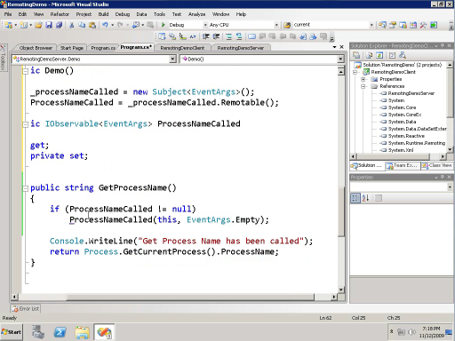
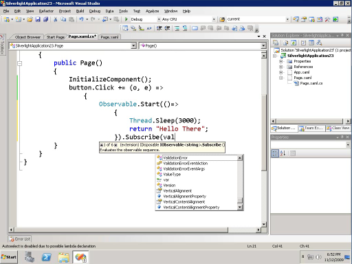
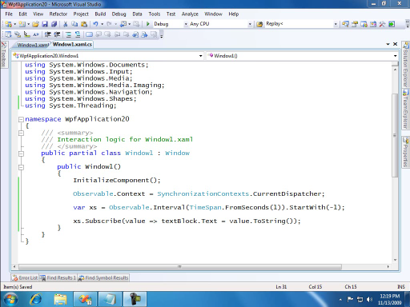

Videos about Reactive Extensions for .NET & Silverlight. Produced by the developers of Rx themselves (sorry ahead of time for our crappy video quality :))
[New-release-of-Rx-for-NET--JS-v1026170-available]
[new-drop-of-Rx-NET--JS-available]
Samuel McAravey: Using Rx in the Real World[WMV] [0:15:41] [2010/04/06]Most C9ers will probably have watched a video or two of Erik and/or his team members talking about Rx. In these videos, we can see some great samples of how to use Rx. But how does Rx play out when…
Your Rx.NET Prescription Has Been Refilled [WMV] [0:22:49] [2010/03/06]
[WMV] [0:22:49] [2010/03/06]Today, we released a new version of Reactive Extensions for .NET.
This new version is a good reason to end the long video silence on C9. Here, Wes, Bart, and Jeff discuss the various changes in…
Jafar Husain: Silverlight Toolkit and Rx, Part 2[WMV] [0:06:34] [2009/12/24]
Jafar explains how the Silverlight Toolkit uses Reactive Extensions. Jafar was one of the early adopters of Rx, in fact the Silverlight Toolkit was the first product
to redistribute…
Jafar Husain: Silverlight Toolkit and Rx, Part 1[WMV] [0:09:13] [2009/12/23]Jafar explains how the
Silverlight Toolkit uses Reactive Extensions. Jafar was one of the early adopters of Rx, in fact the Silverlight Toolkit was the first product to redistribute Rx.
In part…
Wes Dyer: Controlling Concurrency in Rx[WMV] [0:25:16] [2009/12/19]The Rx team has received a lot of questions about Rx and concurrency, thread-affinity, timers and performance. In this video, Wes explains the major changes in the latest release of Rx.
These…
Reactive Extensions API in depth: Retry[WMV] [0:02:03] [2009/12/17]In this episode of the Rx API in depth, Wes talks talks about the Retry operator.
Visit the Reactive Extensions DevLabs page to download and learn more about Rx.
Reactive Extensions API in depth: Repeat[WMV] [0:02:10] [2009/12/16]In this episode of the Rx API in depth, Jeff talks talks about the Repeat operator.
Visit the Reactive Extensions DevLabs page to download and learn more about Rx.
Rx API in depth: Hot and Cold observables[WMV] [0:03:32] [2009/12/14]In this episode of the Rx API in depth, Wes talks talks about hot and cold Observables.
Visit the Reactive Extensions DevLabs page to download and learn more about Rx.
Rx API in depth: Concat, Catch and OnErrorResumeNext[WMV] [0:02:56] [2009/12/12]In this episode of the Rx API in depth, Jeff talks about three very simular binary operators: Concat, Catch and OnErrorResumeNext
Visit the Reactive Extensions DevLabs page to download and learn…
Reactive Extensions API in depth: CombineLatest[WMV] [0:03:44] [2009/12/11]In this episode of the Rx API in depth, Wes talks about the CombineLatest operator and it's relation to the Zip operator
Visit the Reactive Extensions DevLabs page to download and learn more…
Reactive Extensions API in depth: even more Zip [WMV] [0:01:51] [2009/12/10]In the previous episode this episode of the Rx API in depth, Jeff talked about the Zip operator in Rx.
In this episode, Jeff dives even deeper in the semantics of Zip, and shows what happens in…
Reactive Extensions API in depth: Zip[WMV] [0:02:35] [2009/12/09]In this episode of the Rx API in depth, Jeff talks about the Zip operator in Rx.
Visit the Reactive Extensions DevLabs page to download and learn more about Rx.
Reactive Extensions API in depth: Merge [WMV] [0:02:36] [2009/12/08]
[WMV] [0:02:36] [2009/12/08]In this episode of the Rx API in depth, Wes talks about the Merge operator in Rx.
Visit the Reactive Extensions DevLabs page to download and learn more about Rx.
Reactive Extensions API in depth: Contract[WMV] [0:04:40] [2009/11/26]Wes talks about the part of Rx's IObservable contract that is not expressed in the type. What order of messages is allowed, when are methods allowed to throw, on what thread callbacks happen, etc...
Reactive Extensions API in depth: Primitives[WMV] [0:01:48] [2009/11/25]Jeff describes the primitives of IObservable.
Reactive Extensions API in depth: Subscribing[WMV] [0:03:30] [2009/11/23]Wes dives deeper into the semantics of subscription.
Reactive Extensions API in depth: Until and WaitUntil[WMV] [0:05:29] [2009/11/21]Now that we have explained
"Marble Diagrams", we use this representation to describe what Rx's Until and WaitUntil behavior is.
You can watch all of the Rx tutorials
here.
What's different about the 3 versions of Rx? Part 3: .NET 3.5 SP1[WMV] [0:05:46] [2009/11/19]Two days ago we released Reactive Extensions for .NET 3.5 SP1, Silverlight 3 and .NET 4 Beta 2. In this 3 part video, I'll go over the small differences in each of the three releases.
Two days ago…
Reactive Extensions API in depth: SelectMany[WMV] [0:04:21] [2009/11/19]Now that we have explained
"Marble Diagrams", we use this representation to describe what Rx's SelectMany behavior is.
Reactive Extensions API in depth: marble diagrams, select & where[WMV] [0:04:49] [2009/11/19]Wes Dyer, Erik Meijer and Jeffrey van Gogh explain a graphical method called "Marble Diagrams" that helps to reason about Rx API.
We use these "Marble Diagrams" to describe how…
What's different about the 3 versions of Rx? Part 2: .NET 4 [WMV] [0:03:11] [2009/11/19]
[WMV] [0:03:11] [2009/11/19]Yesterday we released Reactive Extensions for .NET 3.5 SP1, Silverlight 3 and .NET 4 Beta 2. In this 3 part video, I'll go over the small differences in each of the three releases.
Yesterday I…
Reactive Extensions API in depth: intro [WMV] [0:01:47] [2009/11/18]
[WMV] [0:01:47] [2009/11/18]Now that Reactive Extensions for .NET and silverlight have been
released, the Rx team thought it would be useful to have short videos about each API in Rx. This video kicks off the series with a…
What's different about the 3 versions of Rx? Part 1: Silverlight 3[WMV] [0:03:57] [2009/11/18]Today we released Reactive Extensions for .NET 3.5 SP1, Silverlight 3 and .NET 4 Beta 2. In this 3 part video, I'll go over the small differences in each of the three releases.
This first video…
Writing your first Rx Application[WMV] [0:06:25] [2009/11/18]Today we released Reactive Extensions for .NET on
DevLabs.
Rx is a .NET Library that allows programmers to write succinct declarative code to orchestrate and coordinate asynchronous and event-based…